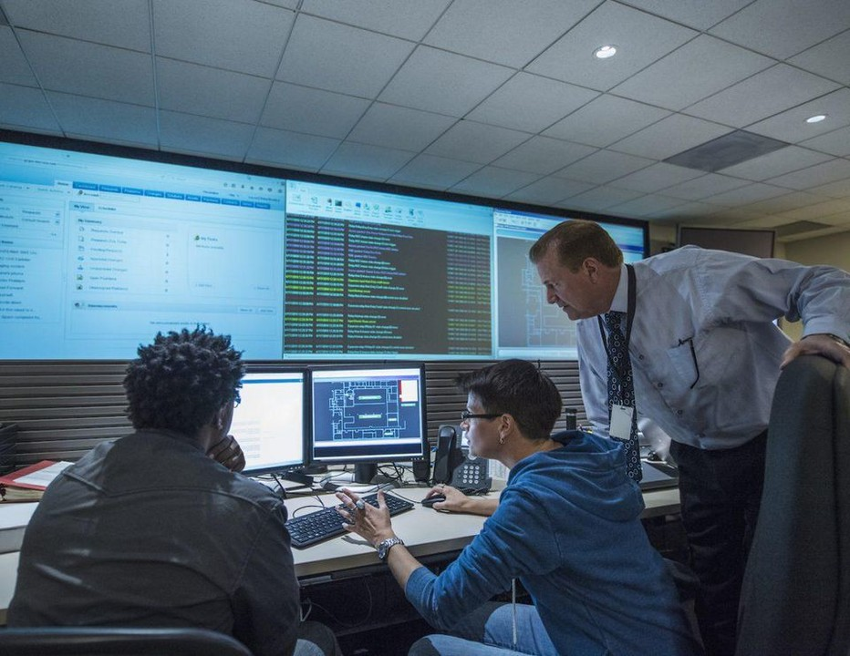

Ciberseguridad en España: más empleo y miles de vacantes sin cubrir
Un mercado en crecimiento
Según Merca2, el empleo en ciberseguridad en España alcanza ya los 164.761 puestos, con un crecimiento anual del 14,25 % que lo llevaría a unos 282.157 en 2029. El medio vincula este auge, entre otros factores, al uso creciente de la inteligencia artificial por parte de los atacantes, que obliga a las empresas a reforzar sus equipos de defensa.
El problema de las vacantes
APTIE cifra en unas 30.000 las vacantes de ciberseguridad sin cubrir en España, con una demanda que crece entre un 20 y un 25 % anual según datos de España Digital 2026. Señala además que los salarios de entrada, de 20.000 a 35.000 €, ya superan la media nacional.
Dependencia del talento externo
Merca2 recoge datos de Deloitte según los cuales cerca del 38 % de los responsables de seguridad (CISO) ve como un reto importante depender de perfiles escasos, y en 2026 alrededor del 60 % del personal del sector en España procede de fuentes externas a la propia organización.
| Dato | Valor | Fuente |
|---|---|---|
| Puestos de trabajo actuales | 164.761 | Merca2 |
| Crecimiento anual del empleo | 14,25 % | Merca2 |
| Vacantes sin cubrir | ≈ 30.000 | APTIE |
| Salario de entrada | 20.000–35.000 € brutos | APTIE |

Por dónde empezar
- Puestos habituales de entrada, como analista de un centro de operaciones de seguridad (SOC).
- Monitorizan los sistemas para detectar comportamientos anómalos.
- Certificaciones y retos prácticos que demuestren experiencia real.
Otra lectura relacionada en esta sección: el nuevo perfil de junior en desarrollo.